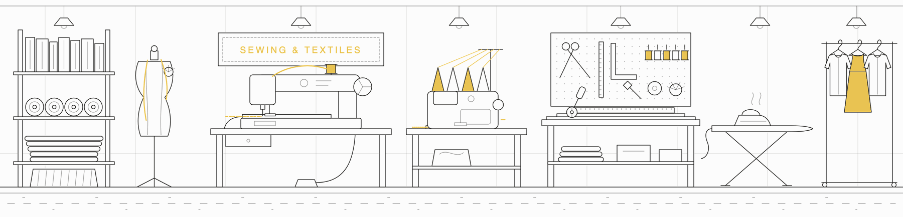

Sewing machines · Serger · Cutting mats · Iron & ironing board · Oh yeah...and more
SEWING AND TEXTILES equipment and materials are labeled YELLOW.

Sew whaaat?!
Sewing and textiles equipment training happens as requested by staff and/or community members. It is also the subject of some workshops. See workshops on the BTU Lab Calendar.
See the BTU Mischief Makers page to contact one of our community experts for sewing tutorials.
Sewing & Textiles Equipment
- Multi-stitch Sewing Machines
- 4-Thread Serger
- Industrial Sewing Machine
- Cutting Mats
- Fabric Scissors and Knives
- Pins & Needles
- Iron & Ironing Board
- Random Fabrics
- Oh yeah...and more.
Materials: BTU LAB IS NOT A FREE SUPPLY STORE. But there are many ways to barter, including displaying your work in BTU, tagging us in social media, offering workshops, volunteering to organize supplies, and more. If you need something, we ask that you give something in return.